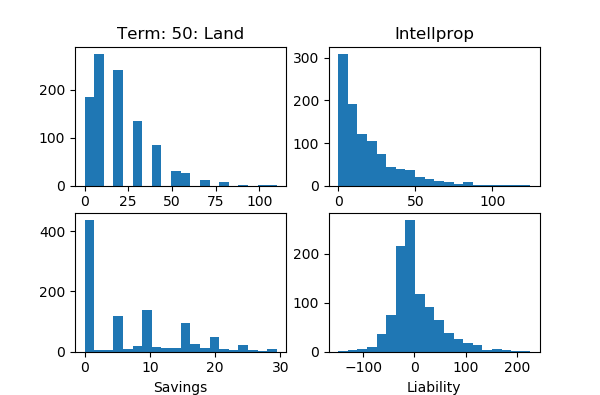

資産市場の簡易シミュレーション その２ 論理的モデル進化
■概要 前回のモデルでは知的財産を高く手に入れたほうが、後日高く売れるようになっていた。そのような「経済」であるとわかっていれば、知的財産を高く売る者を需要側は強く需要するはずである。むしろ、それが新たな「定常状態」のルールになるべきだ。 …と「論理的」に考えはじめたところから、モデルの細かな部分を調整し、その調整した結果が正しいか見るためレポートを充実させる…ということを繰り返し、モデルをブラッシュアップ(特徴を失わない進歩すなわち「進化」)させていった。 結果、土地は多く持つ者が売るが、そういう者は得てして現金を持っているためすぐに別の土地を買い、土地持ちの地位は変わりにくく、一方、知的財産市場に参入するのは債務者で、贅沢品を買うための手元現金を得るため…となった。 今回はその記録である。 ■準備 これから使うプログラムは実験をいろいろ行ったあと最終的にできた simple_market_a1_02.py である。これを実験最初のころに遡っておこなうには、逆にオプションをたくさん付ける必要がある。前回に相当するような実行を行うには次のように行う。(前回いつも付けてたように --trials=100 と --devaluatioin-of-intellprop を付ける。) $ python simple_market_a1_02.py --trials=100 --pause=1.0 \ --devaluation-of-intellprop --asset-rank=net --cash-on-hand=rigid \ --sort-of-intellprop-buyer=cash --sort-of-intellprop-seller=liability \ --sort-of-land-buyer=cash --sort-of-land-seller=liability \ --coeff-of-intellprop-buyer=0.3 --coeff-of-intellprop-seller=0.3 \ --coeff-of-land-buyer=0.8 --coeff-of-land-seller=0.8 Term: 1 Increase of Intellprop:Savings:Liability : 5546.915438333963:2189.8440880233775:-1630.155911976628 Total Intellprop:Land:Savings:Liability : 25378.886167304667:19840.0:11712.441155971996:-1630.1559119766305 Gross Transactions of Intellprop:Land : 4562.819084509181:2410.0 Working: 880 Total Erosion:Repay : 417.153032662548:2047.3089446391768 Demand of Luxuries: 332 Luxuries Bought By Repayer:Number of Erosion:Other : 37:103:192 Number of Liability Minus:Plus : 498:502 MinLiability:MaxLiability:MaxIntellprop:MaxLand:MaxAsset : 138:781:620:242:138 Value of MinLiability:MaxLiability : -114.95583429172373:169.14798760983854 Luxuries of MinLiability:MaxLiability:MaxIntellprop:MaxLand:MaxAsset : 1:0:0:0:1 Luxuries Mean:Min : 0.332:0 MaxLand Sell:MaxLand Buy ? : False:False Rank Change Mean: 0.0 ： ：(途中省略) ： Term: 50 Increase of Intellprop:Savings:Liability : 6119.702110814331:152.64610115180585:-32.35389884819779 Total Intellprop:Land:Savings:Liability : 25951.672839784987:19840.0:11048.949384447938:-7838.647683500699 Gross Transactions of Intellprop:Land : 5008.237910667426:1740.0 Working: 788 Total Erosion:Repay : 926.4275174052559:958.7814162534519 Demand of Luxuries: 513 Luxuries Bought By Repayer:Number of Erosion:Other : 45:152:316 Number of Liability Minus:Plus : 681:319 MinLiability:MaxLiability:MaxIntellprop:MaxLand:MaxAsset : 851:763:428:181:446 Value of MinLiability:MaxLiability : -112.8873420790991:122.68306733672749 Luxuries of MinLiability:MaxLiability:MaxIntellprop:MaxLand:MaxAsset : 30:9:21:31:25 Luxuries Mean:Min : 24.459:0 MaxLand Sell:MaxLand Buy ? : False:True Rank Change Mean: 667.418 ： ：(途中省略) ： Term: 100 Increase of Intellprop:Savings:Liability : 5480.019294631496:-133.10627572434896:126.89372427565468 Total Intellprop:Land:Savings:Liability : 25311.99002360202:19840.0:11221.215714458163:-9476.381353490462 Gross Transactions of Intellprop:Land : 4436.48008873659:1650.0 Working: 757 Total Erosion:Repay : 1002.7209946110845:875.8272703354348 Demand of Luxuries: 522 Luxuries Bought By Repayer:Number of Erosion:Other : 39:157:326 Number of Liability Minus:Plus : 688:312 MinLiability:MaxLiability:MaxIntellprop:MaxLand:MaxAsset : 337:512:470:135:718 Value of MinLiability:MaxLiability : -144.70654502779354:122.90178488095415 Luxuries of MinLiability:MaxLiability:MaxIntellprop:MaxLand:MaxAsset : 60:48:46:74:84 Luxuries Mean:Min : 49.945:17 MaxLand Sell:MaxLand Buy ? : False:False Rank Change Mean: 781.327 この先は実行結果を早く見るため --trials=50, --pause=0.5 にする。 前回よりおおむね表示が増えている。それはおいおい説明していこう。 ■知的財産を持っている者ほどよく売れる 知的財産の値決めの特徴から、どうせ手に入れるのならば、知的財産をすでに多く持っている者から買えば、価格は高いが、高い資産価値のある知的財産が手に入る。知的財産の取引が起こるとき、需要側は知的財産を持っている者を選ぼうとする。 これを今回のモデルで表現するには、知的財産の売り手を選ぶのにソートするとき、知的財産を持っているほうが、売りやすいという形にすればよい。それを試すのが、--sorf-of-intellprop-seller=ascend のオプションである。 知的財産を売る側は強く求められるので coeff を 0.8 に、買う側は、高い者も安い者も共に買いたいだろうということで coeff を 0.3 にした。土地については現金を持っている者が買おうとするが、売る側は誰もあまり売りたくないとみて、買う側の coeff を 0.8、売る側の coeff を 0.3 にした。 こうすることで、知的財産を持つものが、現金を持ちやすくなり、やがて、土地持ちになるということを予想した。 ちなみに coeff は、前回説明したように、ソートのあと乱数を取るときどれぐらい有利になるかの傾斜で、今回は 0.3 と 0.8 の数値を使っているが、0.3 だとそれほど有利にならず、0.8 だとはっきり有利になる…ぐらいの意味がある。 $ python simple_market_a1_02.py --trials=50 --pause=0.5 \ --devaluation-of-intellprop --asset-rank=net --cash-on-hand=rigid \ --sort-of-intellprop-buyer=cash --sort-of-intellprop-seller=ascend \ --sort-of-land-buyer=cash --sort-of-land-seller=liability \ --coeff-of-intellprop-buyer=0.3 --coeff-of-intellprop-seller=0.8 \ --coeff-of-land-buyer=0.8 --coeff-of-land-seller=0.3 ： ：(途中省略) ： Term: 50 Increase of Intellprop:Savings:Liability : 6635.450260042777:-25.03210930689238:214.9678906930967 Total Intellprop:Land:Savings:Liability : 25682.31440043844:19060.0:12412.324503576267:-7971.855787905884 Gross Transactions of Intellprop:Land : 5507.428619933474:1780.0 Working: 702 Total Erosion:Repay : 1354.72638103297:1139.7584903398688 Demand of Luxuries: 484 Luxuries Bought By Repayer:Number of Erosion:Other : 55:200:229 Number of Liability Minus:Plus : 573:427 MinLiability:MaxLiability:MaxIntellprop:MaxLand:MaxAsset : 76:664:939:13:756 Value of MinLiability:MaxLiability : -217.8911328617038:144.40466804826806 Luxuries of MinLiability:MaxLiability:MaxIntellprop:MaxLand:MaxAsset : 38:18:20:30:46 Luxuries Mean:Min : 24.269:3 MaxLand Sell:MaxLand Buy ? : False:False Rank Change Mean: 611.092 結果、グラフの形に大きな変化はない。確かに、知的財産の減価がある状況では、「知的財産を高く買ってすぐな者」＝「Liability が高い者」が、知的財産が高いという性質があるだろうから、Liability が高い者から買う…というので十分だったのかもしれない。 「知的財産を持つものが、現金を持ちやすくなり、やがて、土地持ちになる」というのを調べるために作ったレポートの部分が、「MinLiability:MaxLiability:MaxIntellprop:MaxLand:MaxAsset」になる。これは、プログラムのはじめにプレイヤーに名前となる番号を振っておき、 Liabilitiy 最小：Liability最大：知的財産 最大：土地 最大：純資産 最大の者を毎期、表示している。 見てみると、知的財産持ちが土地持ちになるということはなさそうだ。これはもしかすると知的財産市場が小さいためかと思い、--initial-intellprop-mean を大きくして試してみた。 $ python simple_market_a1_02.py --trials=50 --pause=0.5 \ --devaluation-of-intellprop --asset-rank=net --cash-on-hand=rigid \ --sort-of-intellprop-buyer=cash --sort-of-intellprop-seller=ascend \ --sort-of-land-buyer=cash --sort-of-land-seller=liability \ --coeff-of-intellprop-buyer=0.3 --coeff-of-intellprop-seller=0.8 \ --coeff-of-land-buyer=0.8 --coeff-of-land-seller=0.3 \ --initial-intellprop-mean=100 ： ：(途中省略) ： Term: 50 Increase of Intellprop:Savings:Liability : 27873.191409255407:48.64602082730562:613.6460208273038 Total Intellprop:Land:Savings:Liability : 125643.37437923622:19480.0:12593.81113261288:-5016.921125130977 Gross Transactions of Intellprop:Land : 22746.136408461047:1650.0 Working: 680 Total Erosion:Repay : 2554.289893090724:1940.6438722634177 Demand of Luxuries: 491 Luxuries Bought By Repayer:Number of Erosion:Other : 107:305:79 Number of Liability Minus:Plus : 413:587 MinLiability:MaxLiability:MaxIntellprop:MaxLand:MaxAsset : 600:436:288:930:600 Value of MinLiability:MaxLiability : -2321.2806916370164:979.3710339405629 Luxuries of MinLiability:MaxLiability:MaxIntellprop:MaxLand:MaxAsset : 50:15:13:50:50 Luxuries Mean:Min : 24.451:4 MaxLand Sell:MaxLand Buy ? : False:True Rank Change Mean: 554.643 しかし、上の --sort-of-intellprop-seller=liability で --initial-intellprop-mean=100 としたものに比べて、Liability の裾野は大きくなっているようだが、知的財産持ちが土地持ちになっている兆候はない。知的財産の価値を高く維持するためには知的財産を買い続ける必要があり、土地を買う余裕がないためであろう。 ところで、これで現金のないところからあるところに流れるという道を崩したわけであるが、それならば、そもそも現金にとらわれない経済も考えられる。土地を持っているところから土地を持っていないところへ、知的財産を持っているところから持っていないところへという経済も考えられるかもしれない。それを試すのが、--sort-of-intellprop-buyer=descend --sort-of-intellprop-seller=ascend --sort-of-land-buyer=land --sort-of-land-seller=land というオプションである。 $ python simple_market_a1_02.py --trials=50 --pause=0.5 \ --devaluation-of-intellprop --asset-rank=net --cash-on-hand=rigid \ --sort-of-intellprop-buyer=descend --sort-of-intellprop-seller=ascend \ --sort-of-land-buyer=land --sort-of-land-seller=land \ --coeff-of-intellprop-buyer=0.3 --coeff-of-intellprop-seller=0.8 \ --coeff-of-land-buyer=0.8 --coeff-of-land-seller=0.3 ： ：(途中省略) ： Term: 50 Increase of Intellprop:Savings:Liability : 6878.186644256661:-311.7778235269707:-301.77782352696886 Total Intellprop:Land:Savings:Liability : 26568.033185811302:20570.0:11486.385000801945:-9022.099909818839 Gross Transactions of Intellprop:Land : 5758.0897063917455:2830.0 Working: 845 Total Erosion:Repay : 1138.7147776907943:1440.4926012177602 Demand of Luxuries: 564 Luxuries Bought By Repayer:Number of Erosion:Other : 80:199:285 Number of Liability Minus:Plus : 612:388 MinLiability:MaxLiability:MaxIntellprop:MaxLand:MaxAsset : 246:754:239:879:246 Value of MinLiability:MaxLiability : -223.62303808760427:190.07905347340343 Luxuries of MinLiability:MaxLiability:MaxIntellprop:MaxLand:MaxAsset : 31:12:21:42:31 Luxuries Mean:Min : 24.957:5 MaxLand Sell:MaxLand Buy ? : False:True Rank Change Mean: 792.855 結果、グラフは、土地は山型になり、知的財産は、右に伸びた部分があるが山型がはっきり出てくる。平等なのは良いのだが、この分布は現実的でなさ過ぎる。こういう社会主義的分配モデルは、市場経済を考えるにはおかしいだろう。 この他、ソートの方法をいろいろ試したみた。 土地に関しては、土地を持っている者のほうが売れるようにする／売れないようにする。現金を持ってる方が買うようにする／買わないようにする／土地を持ってない者が買うようにする…などを試した結果、土地を持っている者が売り、現金を持っている者が買うとするのが一番、安定していると思うようになった。「安定」とは、比較的平等で、0 ばかりが多くなく、それでいて、一番の土地持ちは離れてあるような、指数分布風になるということである。 知的財産についてもいろいろ試してみた。知的財産の安い者が売り知的財産が高い者が買うパターンは比較的平等だが、知的財産全体の増分が少ない。知的財産の高い者が売り、知的財産の高い者が買うパターンは、指数分布的になり、増分が多く、これはこれで一つの理想形のように思う。知的財産が高い者が売り、現金のある者が買うパターンも、そこそこ安定している＝全 Liability が一方的に増えたりしないようであった。 そこで折衷的に、土地の多い者が売るが、現金のある者が買い、知的財産は知的財産を持っている者が知的財産を持っている者から買うというモデルにすることにする。こうすることで、土地をまず買うことが知的財産市場への参入権に近くなることになり、土地と知的財産の interation があるという感じで、バランスが良いのではないか？…と考えた。 coeff については、知的財産を売る側は強く求められるので coeff を 0.8 に、買う側は、それほど関係がないということで coeff を 0.3 にした。土地については現金を持っている者が買おうとするが、売る側は誰もあまり売りたくないとみて、買う側の coeff を 0.8、売る側の coeff を 0.3 にした。 $ python simple_market_a1_02.py --trials=50 --pause=0.5 \ --devaluation-of-intellprop --asset-rank=net --cash-on-hand=rigid \ --sort-of-intellprop-buyer=ascend --sort-of-intellprop-seller=ascend \ --sort-of-land-buyer=cash --sort-of-land-seller=land \ --coeff-of-intellprop-buyer=0.3 --coeff-of-intellprop-seller=0.8 \ --coeff-of-land-buyer=0.8 --coeff-of-land-seller=0.3 ： ：(途中省略) ： Term: 50 Increase of Intellprop:Savings:Liability : 7935.2095717518605:-4.08898841872724:-149.08898841872906 Total Intellprop:Land:Savings:Liability : 28522.045882611186:19820.0:11773.448073125446:-4492.136441046578 Gross Transactions of Intellprop:Land : 6439.898550210103:2400.0 Working: 757 Total Erosion:Repay : 1232.8436928635838:1381.9326812823106 Demand of Luxuries: 495 Luxuries Bought By Repayer:Number of Erosion:Other : 83:193:219 Number of Liability Minus:Plus : 572:428 MinLiability:MaxLiability:MaxIntellprop:MaxLand:MaxAsset : 53:940:299:396:53 Value of MinLiability:MaxLiability : -275.8459691878705:222.8932191396125 Luxuries of MinLiability:MaxLiability:MaxIntellprop:MaxLand:MaxAsset : 44:4:28:39:44 Luxuries Mean:Min : 23.703:3 MaxLand Sell:MaxLand Buy ? : False:False Rank Change Mean: 656.367 こうすると土地は割と指数関数的でありながら、そこそこ平等になる。土地の多い者が売っているのに最大値が下がりにくいのはなぜだろう？ 「MinLiability:MaxLiability:MaxIntellprop:MaxLand:MaxAsset」を見てみると土地 最大の者がなかなか変化していない。 そこで作ったのがレポートの「MaxLand Sell:MaxLand Buy ?」の項目である。これは、土地 最大の者が土地を売ったか、買ったかを示している。 これを毎期見ていると、土地 最大の者は売る機会は意外に少なく見える…というのは売ってすぐはしばしば土地最大でなくなることがあるためであろうし、買う機会は意外に多く見える。これは買ったから土地最大になった面もあるが、それ以上に現金を十分持っているため売った金で土地をすぐ買い戻すからだと考えられる。 土地単価はずっと 10 で、その中から贅沢品を買うこともあるはずなのだが、一方、土地を持っていれば、土地の分、知的財産が売りやすくなるという特徴が私のモデルにはあったため、そこで得た現金を土地取引にまわすことができるものと思われる。 これが「現実的」なモデルになっているとまずは考える。 この先、土地の多い者が売るが、現金のある者が買うという設定は固定する。 ■逆転のチャンス いろいろな設定で地位上昇がどれぐらいあるかも調べてみた。個人の最大順位、最低順位を記録してその(累積)変動の平均を表示した。それがレポートの Rank Change Mean の項目である。 これまでのところで 667.418, 611.092, 554.643, 792.855, 656.367 と変化はあるにはあるが、思ったほど違いはないとも言えるかもしれないが、550 と 800 近いのは大きな変化だと考えるべきなのだろう。 土地の多い者が売るが、現金のある者が買うという設定を固定すると、知的財産を持っている者が知的財産を持っている者を買うときは上のように 656.367。知的財産を持っていない者が知的財産を持っている者から買うとしたときは 687.057。知的財産を持っている者が知的財産を持っていない者から買うとしたときは 722.907。知的財産を持っていない者が知的財産を持っていない者から買う場合、750.252。 貧しい者どうしで取引したほうが良いという意外な結果になる。 現金のある者が知的財産を持っている者から買うとしたときは、663.106。現金のある者が知的財産を持っていない者から買うとしたときは、743.453。借金のある者が知的財産を持っている者から買うとしたときは 688.839。借金のある者が知的財産を持っていない者から買うとしたときは 716.653。 現金のある者が貧しい者から買えば良いとなる。 上の「社会主義モデル」が Rank Change Mean の大きな変化があるのは、土地の上位と下位の差が小さいため上下がしやすいからであろう。一方、知的財産持ちの地位はどのモデルでも激しく変化する。それを調べるのが --asset-rank=intellprop のオプションである。これを指定して Rank Change Mean を調べると「社会主義モデル」で、911.47。元の変化が少ない、土地は、土地持ちが売り現金持ちが買い、知的財産は、知的財産持ちが売り知的財産持ちが買うという「現実的 」モデルでは Rank Change Mean は、874.126。 ■いくつかの予想と結果 先の「現実的」モデル、知的財産を持っている者が知的財産を持っている者から買うとした場合、知的財産の評価に土地がからむことの効果で --initial-intellprop-mean が小さいほど変動が大きいと予想する。試してみると、--initial-intellprop-mean=20 が上の 656.367。それを 100 にすると 589.652。逆に 10 にすると、669.426。小さいほうは弱いが想定どおりの結果を得た。 逆に、土地ランクが知的財産にどれぐらい影響を受けるか調べるため --asset-rank=land として、直上と同じように「現実的」モデルで --initial-intellprop-mean を変化させてみた。影響は軽微で、--initial-intellprop-mean:Rank Change Mean = 10:705.34, 20:709.127, 100:722.686 である。知的財産を売った現金で土地が買われることはあるようだが、その影響は少なそうだ。 Liability が大きくなっても、それを抑制する手段が社会的にない。 Liability は際限なく大きくなるのではないかと予想した。 それを確認するのが「Value of MinLiability:MaxLiability」である。それは上で確かめていただければわかるように、「現実的」モデルで、Liability に抑制が効かないはずの場合でも、Liability の最大値はそれほど大きくならなかったのは少し不思議である。推移を見ていても一方的に大きくなるという感じではなかった。 ■「現実的」モデル再考 「定常状態」を考えると、知的財産は買わないほうが有利ではないか？ ほとんどの者は知的財産を買おうとせず、一部の者のみ Liability を気にせず知的財産を買う…それが「現実的」モデルということでではないか。 そういうことであれば、ほとんどの者は知的財産は売りたいかもしれないが買おうとしない。すでに知的財産のある者だけが価値維持のために買おうとするということで買う側の coeff の傾斜を強く、すなわち --coeff-of-intellprop-buyer=0.8 にすればよいだろう。 一方、売る側については二つの考え方がある。一つはこれまで通り、買う側の需要を考え、高い者ほどよく売れるというものである。このとき、--coeff-of-intellprop-seller=0.8 にすればよい。もう一つは、売る側に立って、皆が売ろうとしているという面を強調し、前回のように誰が知的財産を創るかは運の要素が強いと考えるのである。このとき、--coeff-of-intellprop-seller=0.3 にすればよい。 いずれもにしても、やや意外なことに Liability の最大値が際限なく大きくなるということはなさそうだ。--coeff-of-intellprop-seller=0.8 のほうが知的財産最大の者(MaxIntellprop) がやがて純資産最大の者(MaxAsset) になるなどドラマがあるので、そちらのほうがよさそうに思う。これを新「現実的」モデルとする。 python simple_market_a1_02.py --trials=50 --pause=0.5 \ --devaluation-of-intellprop --asset-rank=net --cash-on-hand=rigid \ --sort-of-intellprop-buyer=ascend --sort-of-intellprop-seller=ascend \ --sort-of-land-buyer=cash --sort-of-land-seller=land \ --coeff-of-intellprop-buyer=0.8 --coeff-of-intellprop-seller=0.8 \ --coeff-of-land-buyer=0.8 --coeff-of-land-seller=0.3 ： ：(途中省略) ： Term: 50 Increase of Intellprop:Savings:Liability : 7205.496610344628:-169.11165912155047:65.88834087845134 Total Intellprop:Land:Savings:Liability : 27006.837357255998:19680.0:11483.732920268245:-6888.655691132185 Gross Transactions of Intellprop:Land : 5842.166655180663:2400.0 Working: 767 Total Erosion:Repay : 1294.6346068293064:1228.746265950857 Demand of Luxuries: 527 Luxuries Bought By Repayer:Number of Erosion:Other : 61:200:266 Number of Liability Minus:Plus : 598:402 MinLiability:MaxLiability:MaxIntellprop:MaxLand:MaxAsset : 759:949:415:151:572 Value of MinLiability:MaxLiability : -279.53217282780383:245.23138262445127 Luxuries of MinLiability:MaxLiability:MaxIntellprop:MaxLand:MaxAsset : 39:9:12:28:39 Luxuries Mean:Min : 24.944:6 MaxLand Sell:MaxLand Buy ? : True:True Rank Change Mean: 669.082 あと、後述のため、--coeff-of-intellprop-seller=0.3 の場合も載せておこう。 python simple_market_a1_02.py --trials=50 --pause=0.5 \ --devaluation-of-intellprop --asset-rank=net --cash-on-hand=rigid \ --sort-of-intellprop-buyer=ascend --sort-of-intellprop-seller=ascend \ --sort-of-land-buyer=cash --sort-of-land-seller=land \ --coeff-of-intellprop-buyer=0.8 --coeff-of-intellprop-seller=0.3 \ --coeff-of-land-buyer=0.8 --coeff-of-land-seller=0.3 ： ：(途中省略) ： Term: 50 Increase of Intellprop:Savings:Liability : 6133.165607545234:-670.7183330615608:264.28166693842377 Total Intellprop:Land:Savings:Liability : 24752.955182139896:18240.0:11765.008297993281:-6560.379935692357 Gross Transactions of Intellprop:Land : 4885.240870731993:2420.0 Working: 634 Total Erosion:Repay : 1200.5759008755501:936.2942339371128 Demand of Luxuries: 485 Luxuries Bought By Repayer:Number of Erosion:Other : 54:171:260 Number of Liability Minus:Plus : 631:369 MinLiability:MaxLiability:MaxIntellprop:MaxLand:MaxAsset : 425:623:623:675:822 Value of MinLiability:MaxLiability : -270.7852020784404:199.19868532306873 Luxuries of MinLiability:MaxLiability:MaxIntellprop:MaxLand:MaxAsset : 31:18:18:39:43 Luxuries Mean:Min : 24.588:5 MaxLand Sell:MaxLand Buy ? : False:True Rank Change Mean: 694.192 ■贅沢品需要 平等さを測る指標として、グラフの平坦さや、Rank Change Mean を見てきたが、それ以外に、実際どれだけ贅沢品を買う余裕があったかを調べることができる。それがこれまでレポートの中に出て来た「Luxuries of MinLiability:MaxLiability:MaxIntellprop:MaxLand:MaxAsset」や「Luxuries Mean」である。 贅沢品は基本、現金持ちまたは土地持ちが一番買っているようだ。土地持ちは金まわりがいいのだろう。ただ、初期はそうではないのは、金持ちが土地持ちになってからその効果が出るということだろう。知的財産取引でトップにいる者は、贅沢品をあまり買えていない場合も普通に買えている場合もあり、マチマチなようだ。 直前の節で、--coeff-of-intellprop-seller=0.3 の場合、現金が知的財産を持つ者から持たない者へ移転されることで、平均の贅沢品需要が増えるのではないかと予想した。が、そうならなかった。24.944 から 24.588 へとわずかだが逆に減っている。知的財産を持つ者の現金が不足するからだろうと思われる。知的財産を持つ者は、安く知財を買って高く知財を売ることで現金を作り出すのだと思われ、借金一辺倒になるわけではないようだ。 ■返済率の謎 前回の実験で「返済率」すなわち --repayment-rate を変えても贅沢品需要が変化しないことがわかったが、これが不思議であった。それを調べるために作ったレポートが、「Luxuries Bought By Repayer:Number of Erosion:Other」の部分である。ここで --repayment-rate を 0.5 から 0.1 や 0.9 に変化させてみると「贅沢品のうち返済者に買われた分」＝「Bought By Repayer」の部分は確かにかなり変化するのだが、それを他が補うようだ。「他」というのは「贅沢品を買うときに Erosion が起きた数」＝「Number of Erosion」と「両者を除いた数」＝「Other」も変化するということである。 そこで気になって調べることにしたのが、「Liability の現金持ちと借金持ちの割合」＝「Number of Liability Minus:Plus」である。これを見ると、返済率が変われば、割合が変わっていて、これが影響してそうだ。0.1 だと借金持ちが多いが返済が少なく、0.9 だと借金持ちが少ないが返済が多い。 ■インパクト実験 前回、なんとか贅沢品需要がコントロールできないかと考えた。半ば無理矢理にでも…ということで --cash-margin というのを考えた。機能としては消費者金融的で、借金があってもそのマージンの分だけはさらに借金して贅沢品が買えるというものである。 しかし、これも効果はほぼ一時的なようである。最初借りて消費できても結局使い過ぎれば再び貯めなければならなくなる。ただ、一時的な効果はある…ということを確かめるために 30 期になったときに cash margin を足し 40 期になったら同額引く --add-cash-margin-30 というオプションを作り試してみたら、やはり 30 期になったら消費が増え、40期になったら大きく落ち込むようになった。新「現実的」モデルで試す。 python simple_market_a1_02.py --trials=50 --pause=0.5 \ --devaluation-of-intellprop --asset-rank=net --cash-on-hand=rigid \ --sort-of-intellprop-buyer=ascend --sort-of-intellprop-seller=ascend \ --sort-of-land-buyer=cash --sort-of-land-seller=land \ --coeff-of-intellprop-buyer=0.8 --coeff-of-intellprop-seller=0.8 \ --coeff-of-land-buyer=0.8 --coeff-of-land-seller=0.3 \ --add-cash-margin-30=10 ： ：(途中省略) ： Term: 29 Increase of Intellprop:Savings:Liability : 7791.132233834742:-235.45183627346705:109.54816372653022 Total Intellprop:Land:Savings:Liability : 28028.136611414506:18180.0:12255.783012081369:-5307.897378226973 Gross Transactions of Intellprop:Land : 6309.120447039216:2350.0 Working: 753 Total Erosion:Repay : 1410.8310482996262:1301.2828845730928 Demand of Luxuries: 525 Luxuries Bought By Repayer:Number of Erosion:Other : 68:200:257 Number of Liability Minus:Plus : 582:418 MinLiability:MaxLiability:MaxIntellprop:MaxLand:MaxAsset : 557:628:720:606:190 Value of MinLiability:MaxLiability : -204.93925725207373:199.09862556208765 Luxuries of MinLiability:MaxLiability:MaxIntellprop:MaxLand:MaxAsset : 19:6:17:25:29 Luxuries Mean:Min : 14.049:0 MaxLand Sell:MaxLand Buy ? : True:True Rank Change Mean: 557.554 Term: 30 Increase of Intellprop:Savings:Liability : 8073.831354290269:-1678.652930256123:81.34706974387518 Total Intellprop:Land:Savings:Liability : 28310.83573187001:18180.0:10577.130081825238:-5226.550308483097 Gross Transactions of Intellprop:Land : 6595.2450820565755:2490.0 Working: 859 Total Erosion:Repay : 1554.3025713190277:1472.9555015751491 Demand of Luxuries: 690 Luxuries Bought By Repayer:Number of Erosion:Other : 107:249:334 Number of Liability Minus:Plus : 588:412 MinLiability:MaxLiability:MaxIntellprop:MaxLand:MaxAsset : 190:628:923:581:192 Value of MinLiability:MaxLiability : -223.35789263969403:214.4828973789294 Luxuries of MinLiability:MaxLiability:MaxIntellprop:MaxLand:MaxAsset : 30:6:21:14:16 Luxuries Mean:Min : 14.739:0 MaxLand Sell:MaxLand Buy ? : False:False Rank Change Mean: 564.21 ： ：(途中省略) ： Term: 39 Increase of Intellprop:Savings:Liability : 7675.163990340396:-239.09269846934512:995.9073015306536 Total Intellprop:Land:Savings:Liability : 27912.168367920174:18180.0:8682.83147266685:-375.8489176414813 Gross Transactions of Intellprop:Land : 6371.880654867939:2360.0 Working: 625 Total Erosion:Repay : 2157.9599305449774:1162.0526290143234 Demand of Luxuries: 499 Luxuries Bought By Repayer:Number of Erosion:Other : 51:261:187 Number of Liability Minus:Plus : 541:459 MinLiability:MaxLiability:MaxIntellprop:MaxLand:MaxAsset : 69:18:263:25:190 Value of MinLiability:MaxLiability : -262.54165605571256:243.77615472632732 Luxuries of MinLiability:MaxLiability:MaxIntellprop:MaxLand:MaxAsset : 36:15:19:31:39 Luxuries Mean:Min : 19.588:0 MaxLand Sell:MaxLand Buy ? : True:True Rank Change Mean: 617.397 Term: 40 Increase of Intellprop:Savings:Liability : 6793.819754953867:2456.263364447026:-38.73663555297526 Total Intellprop:Land:Savings:Liability : 27030.824132533628:18180.0:11139.094837113873:-414.5855531944548 Gross Transactions of Intellprop:Land : 5509.310114839025:2330.0 Working: 719 Total Erosion:Repay : 1365.7613536898755:1404.4979892428523 Demand of Luxuries: 313 Luxuries Bought By Repayer:Number of Erosion:Other : 37:177:99 Number of Liability Minus:Plus : 524:476 MinLiability:MaxLiability:MaxIntellprop:MaxLand:MaxAsset : 69:562:517:25:923 Value of MinLiability:MaxLiability : -257.54165605571256:244.7290675071564 Luxuries of MinLiability:MaxLiability:MaxIntellprop:MaxLand:MaxAsset : 37:17:15:32:30 Luxuries Mean:Min : 19.901:0 MaxLand Sell:MaxLand Buy ? : False:False Rank Change Mean: 622.648 ： ：(途中省略) ： Term: 50 Increase of Intellprop:Savings:Liability : 7513.211257871157:33.71824372233641:-26.281756277644718 Total Intellprop:Land:Savings:Liability : 27750.21563545087:18180.0:12187.111088884149:-2031.5693014241672 Gross Transactions of Intellprop:Land : 6218.458256222911:2460.0 Working: 681 Total Erosion:Repay : 1184.7108298257897:1210.9925861034471 Demand of Luxuries: 450 Luxuries Bought By Repayer:Number of Erosion:Other : 59:174:217 Number of Liability Minus:Plus : 540:460 MinLiability:MaxLiability:MaxIntellprop:MaxLand:MaxAsset : 202:555:189:581:202 Value of MinLiability:MaxLiability : -387.3609180919569:227.40028482253902 Luxuries of MinLiability:MaxLiability:MaxIntellprop:MaxLand:MaxAsset : 45:14:25:34:45 Luxuries Mean:Min : 24.626:4 MaxLand Sell:MaxLand Buy ? : True:False Rank Change Mean: 664.211 「贅沢品需要」＝「Demand of Luxuries」に注目して欲しい。それまで 500 ぐらいをうろうろしていたのが30期に一気に 600 を越えるが、39期になるとその効果は完全になくなっており、40期に --cash-margin がなくなると、今度は 400 未満に落ち込んでしまう。しばらくして 50 期になるとすっかり回復はしている…となる。 そういえば、価格の効果は一時的ではなかったということで、税を増減したことに相当する --add-price-of-wages-30 と --add-price-of-luxuries-30 を作り試してみた。--add-price-of-wages-30 は意外なことに、30 期では逆効果になる。それは、贅沢品需要の決定において、給与に比べて貯蓄が十分にあることが関係している(curS * 3 が base になっている)からだ。--add-price-of-luxuries-30 の場合はそういうことはないが、ただ、いきなり効くという感じではなくジワジワ効くようだ。 「金融政策」は効果が一時的で、「消費税」の増減が一番効果があり、長期的性質も良い。…となるわけだが、micro_economy_*.py と組み合わせたとき、これら「税」の効果は、明らかではなく、価格がモデルの外側のためこういうことが言えるだけで、モデルの内側で対応されれば、cash margin や repayment rate と同じような感じになるのかもしれないのは注意すべきであろう。 ■新「現実的」モデル再考 借金地獄に陥ってしまうと、そこから復帰するチャンスがなくなるのではないか？ それをなくすには、土地をまず買ってそこから知財を買ってもらうという形が一番いいのではないか。 土地は現金があるほうが買おうとするが、ない者も逆転のために買おうとするため --coeff-of-land-buyer=0.3 とする。土地の多い者ほど土地を売るということはないが、多い者は金持ちであることが多く、すぐ買い戻せるのに対し、土地の少ない者はとにかくその土地にしがみつき売ろうとしない…ということで --coeff-of-land-seller=0.8 とする。つまり 0.3 と 0.8 をこれまでと逆にする。 python simple_market_a1_02.py --trials=50 --pause=0.5 \ --devaluation-of-intellprop --asset-rank=net --cash-on-hand=rigid \ --sort-of-intellprop-buyer=ascend --sort-of-intellprop-seller=ascend \ --sort-of-land-buyer=cash --sort-of-land-seller=land \ --coeff-of-intellprop-buyer=0.8 --coeff-of-intellprop-seller=0.8 \ --coeff-of-land-buyer=0.3 --coeff-of-land-seller=0.8 ： ：(途中省略) ： Term: 50 Increase of Intellprop:Savings:Liability : 8786.44117651806:757.9733941569448:-432.0266058430543 Total Intellprop:Land:Savings:Liability : 29498.444328506244:20780.0:11503.489328162783:-4599.383373485249 Gross Transactions of Intellprop:Land : 7230.2769181629255:2890.0 Working: 878 Total Erosion:Repay : 1058.6112456197102:1490.637851462768 Demand of Luxuries: 506 Luxuries Bought By Repayer:Number of Erosion:Other : 67:192:247 Number of Liability Minus:Plus : 597:403 MinLiability:MaxLiability:MaxIntellprop:MaxLand:MaxAsset : 88:970:439:172:88 Value of MinLiability:MaxLiability : -378.1308967105777:319.33606558832236 Luxuries of MinLiability:MaxLiability:MaxIntellprop:MaxLand:MaxAsset : 40:11:33:21:40 Luxuries Mean:Min : 24.879:3 MaxLand Sell:MaxLand Buy ? : True:True Rank Change Mean: 713.207 これを第三「現実的」モデルとする。「現実的」なのに、Rank Change Mean が 669.082から 713.207 に改善している。貧しい者の抵抗をある程度、組み入れたからであろう。 ■土地と知的財産、再考 土地上位者がその地位を維持できるのは、贅沢品消費しても、いくぶん土地があることで知的財産が売れて現金が入ってくるからと思われる。よって、知的財産評価に土地をからませないようにすれば、土地上位が頻繁に入れ替わるようになるだろう。それを --intellprop-land-mag=0.0 で指定できるようにして第三「現実的」モデルで試すと、そのような結果が得られた。これはこれまでの「現実的」モデルのように --coeff-of-land-seller=0.3 では観測しにくい。 python simple_market_a1_02.py --trials=50 --pause=0.5 \ --devaluation-of-intellprop --asset-rank=net --cash-on-hand=rigid \ --sort-of-intellprop-buyer=ascend --sort-of-intellprop-seller=ascend \ --sort-of-land-buyer=cash --sort-of-land-seller=land \ --coeff-of-intellprop-buyer=0.8 --coeff-of-intellprop-seller=0.8 \ --coeff-of-land-buyer=0.3 --coeff-of-land-seller=0.8 \ --intellprop-land-mag=0.0 ： ：(途中省略) ： Term: 50 Increase of Intellprop:Savings:Liability : 4870.038493898726:616.0192090046239:-273.98079099538427 Total Intellprop:Land:Savings:Liability : 23976.550170616505:19220.0:11870.618252621334:-8113.657289470478 Gross Transactions of Intellprop:Land : 3809.136802651196:2890.0 Working: 863 Total Erosion:Repay : 918.6125904769074:1192.5933814722828 Demand of Luxuries: 516 Luxuries Bought By Repayer:Number of Erosion:Other : 57:169:290 Number of Liability Minus:Plus : 643:357 MinLiability:MaxLiability:MaxIntellprop:MaxLand:MaxAsset : 537:11:62:405:537 Value of MinLiability:MaxLiability : -314.4350006300058:204.7780823707758 Luxuries of MinLiability:MaxLiability:MaxIntellprop:MaxLand:MaxAsset : 34:15:20:28:34 Luxuries Mean:Min : 24.15:1 MaxLand Sell:MaxLand Buy ? : False:False Rank Change Mean: 727.086 ■逆転一発モデル これまでのところで知的財産を買うのは不利にしかならないことが明らかになってきた。多くの人は知的財産を売りたいがために知的財産を必要とするかもしれないが、知的財産を買う人間がいないのでは意味がない。 なぜ、買えば不利になるだけの知的財産を買おうとするのだろうか。それはそもそも不利な地位にあるから一発逆転を狙うからではないかと考え直した。 例えば、Liability のある者ほど一発逆転を狙って知的財産購入に参加するモデル、これは --sort-of-intellprop-buyer=liability で指定できる。または、純資産を持っていないほど知的財産購入に参加するモデル、これは、--sort-of-intellprop-buyer=poor で指定できるようにした。 第三「現実的」モデルを元に実験する。 python simple_market_a1_02.py --trials=50 --pause=0.5 \ --devaluation-of-intellprop --asset-rank=net --cash-on-hand=rigid \ --sort-of-intellprop-buyer=liability --sort-of-intellprop-seller=ascend \ --sort-of-land-buyer=cash --sort-of-land-seller=land \ --coeff-of-intellprop-buyer=0.8 --coeff-of-intellprop-seller=0.8 \ --coeff-of-land-buyer=0.3 --coeff-of-land-seller=0.8 ： ：(途中省略) ： Term: 50 Increase of Intellprop:Savings:Liability : 7473.942875879551:441.9786856861265:-403.02131431387306 Total Intellprop:Land:Savings:Liability : 28174.251857084902:18510.0:11254.588250117762:-2139.12726662186 Gross Transactions of Intellprop:Land : 6110.665738376889:2730.0 Working: 872 Total Erosion:Repay : 1254.9305707055203:1657.9518850193913 Demand of Luxuries: 525 Luxuries Bought By Repayer:Number of Erosion:Other : 78:235:212 Number of Liability Minus:Plus : 564:436 MinLiability:MaxLiability:MaxIntellprop:MaxLand:MaxAsset : 458:208:208:686:458 Value of MinLiability:MaxLiability : -173.69583341020456:224.14318664012495 Luxuries of MinLiability:MaxLiability:MaxIntellprop:MaxLand:MaxAsset : 29:17:17:29:29 Luxuries Mean:Min : 24.755:5 MaxLand Sell:MaxLand Buy ? : False:False Rank Change Mean: 765.526 python simple_market_a1_02.py --trials=50 --pause=0.5 \ --devaluation-of-intellprop --asset-rank=net --cash-on-hand=rigid \ --sort-of-intellprop-buyer=poor --sort-of-intellprop-seller=ascend \ --sort-of-land-buyer=cash --sort-of-land-seller=land \ --coeff-of-intellprop-buyer=0.8 --coeff-of-intellprop-seller=0.8 \ --coeff-of-land-buyer=0.3 --coeff-of-land-seller=0.8 ： ：(途中省略) ： Term: 50 Increase of Intellprop:Savings:Liability : 6595.1984961163835:409.7428267654377:-190.25717323455183 Total Intellprop:Land:Savings:Liability : 26749.15163200843:18920.0:10893.912696559186:-2228.097252774705 Gross Transactions of Intellprop:Land : 5336.587256637077:2690.0 Working: 810 Total Erosion:Repay : 1111.636047374629:1301.8932206091877 Demand of Luxuries: 500 Luxuries Bought By Repayer:Number of Erosion:Other : 51:203:246 Number of Liability Minus:Plus : 587:413 MinLiability:MaxLiability:MaxIntellprop:MaxLand:MaxAsset : 469:655:203:677:541 Value of MinLiability:MaxLiability : -157.49700869068928:178.48945802931615 Luxuries of MinLiability:MaxLiability:MaxIntellprop:MaxLand:MaxAsset : 32:19:15:42:20 Luxuries Mean:Min : 24.928:3 MaxLand Sell:MaxLand Buy ? : True:False Rank Change Mean: 783.034 ソートが poor でも liability でも Rank Change Mean は大して変わらないが、liability にしたほうが最大 Liability が大きくなる。が、際限なく大きくなる様子でもないのは少し不思議で、一安心。 実験したとき、MaxLiability の贅沢品消費がやたらと少なかったりした。どうも失業者が消費できないのが関係してそうだ。そこで、最低の贅沢品消費がどれぐらいかをこの段階になってやっと知ろうとして作ったレポートが、 Luxuries Min になる。 しばらくいろいろ考え直してみて、--sort-of-intellprop-buyer=liability のほうが正しいと思えるようになった。なぜなら、知的財産を買ったそのときは知的財産の評価額が払った額より大きいのだから、純資産はプラスになり、それで満足するということになりかねない。あくまで現金が得られるまで知的財産を買うほうが自然なように思う。そうすることで、失業者が消費をできるチャンスが増えるのではないか。しかし、Luxuries Min を観測すると、良くない。また、「一発逆転」はどうもできていない。 知的財産を多く持っている者はさらに多く買おうとするという効果も考慮したい。そうすることで高く知財を手に入れられる者が多くなり、失業者の消費チャンスも増えないか。--sort-of-intellprop-buyer=hybrid がそれ。でも、それもうまくいかない。Luxuries Min はなかなか上がって来ない。これはあまり意味がなかった。 ■手元現金 失業者が消費をできるチャンスを増やそうと、土地や知的財産のその期の売り上げ(cur_sell)からなら、贅沢品を買ってもよいとしてみた。それを試すのが、--cash-on-hand=loose になる。cur_sell から返済もすべきか迷ったが、 Erosion にされなかった分はすべて liability に反映されることでヨシとした。 python simple_market_a1_02.py --trials=50 --pause=0.5 \ --devaluation-of-intellprop --asset-rank=net --cash-on-hand=loose \ --sort-of-intellprop-buyer=liability --sort-of-intellprop-seller=ascend \ --sort-of-land-buyer=cash --sort-of-land-seller=land \ --coeff-of-intellprop-buyer=0.8 --coeff-of-intellprop-seller=0.8 \ --coeff-of-land-buyer=0.3 --coeff-of-land-seller=0.8 ： ：(途中省略) ： Term: 50 Increase of Intellprop:Savings:Liability : 7421.155081635061:154.51083462616043:-45.4891653738423 Total Intellprop:Land:Savings:Liability : 26475.727558419687:19960.0:6969.278396206698:2461.0137016147955 Gross Transactions of Intellprop:Land : 6113.564321908445:2910.0 Working: 788 Total Erosion:Repay : 1659.601230033405:1705.0903954072478 Demand of Luxuries: 512 Luxuries Bought By Repayer:Number of Erosion:Other : 142:275:129 Number of Liability Minus:Plus : 585:415 MinLiability:MaxLiability:MaxIntellprop:MaxLand:MaxAsset : 374:778:638:114:723 Value of MinLiability:MaxLiability : -148.8548138143931:226.28476997726528 Luxuries of MinLiability:MaxLiability:MaxIntellprop:MaxLand:MaxAsset : 42:6:22:26:28 Luxuries Mean:Min : 25.426:6 MaxLand Sell:MaxLand Buy ? : True:False Rank Change Mean: 735.212 今回は、グラフも載せておこう。下図がそれになる。
結果、--sort-of-intellprop-buyer=liability でも Luxuries Min がかなり改善された。最大 Liability も一方的に増える感じではない。 直前に試した --sort-of-intellprop-buyer=liability --cash-on-hand=loose なものを第四「現実的」モデルとする。 手元現金を得るため、借金持ちが知財市場に参入するというストーリー。「一発逆転」はとても難しくても手元現金が欲しいということなら、意味がある。ただ、現金を浪費しがちということで、Rank Change Mean は悪くなるのを予想したが、今回はそうなっている。 ■全 Liability の増大 なお、--initial-intellprop-mean=100 などにすると、最大 Liability の増大はそれほどでもないが、全 Liability は確実に増大する。これは --cash-on-hand=rigid でもそうで、第三「現実的」モデルまではなんとか全 Liability の増大は抑えられているが、それ以降はまったくダメになる。そもそも最初の「現実的」モデルでさえ増大はしていく。これらは些細な変更に対して頑健ではないということで「現実的」と言えないのかもしれない。 デフォルトの --initial-intellprop-mean=20 の場合、それが抑えられているのは知的財産に対する土地の効果で知的財産を売るのが黒字になるからかもしれない。しかし、その割には「土地と知的財産、再考」のところの例は、土地の効果がなくても全 Liability の増大は起きておらず、よくわからないことになっている。 知的財産の平均を増やすときは、わずかに給与を増やして返済額が増えるようにしないといけないのかもしれない。何度か試してそうすれば釣り合いが取れる数値(+1 から +3)があるようだった。その数値の求め方が将来わかって、それも加味できるなら頑健さは保たれているというべきで「現実的」と呼び続けてもいのかもしれない。 ■結論 実験で試行錯誤しながらモデルを「改善」していていったのをそのまま書いてみた。 階級変動があるからすなわちモデルが正しいという見方はしなかったが、それを参考にしたこともある。これは社会政策的アプローチだろう。 一方、値決めの性質などから、「現実的」ということを追及していった面もある。これはインセンティブ指向のアプローチだろう。 できたモデルは中庸のモデルだが、ある意味論理的な帰結でもある。その帰結たる第四「現実的」モデルの特徴をまとめると次のようになる。 ●知的財産の値決めの特徴から、知的財産を持っている者の物が強く需要されるため、売る者は知的財産を持っている者が確実に多い。 ●知的財産を買わずに売ろうとする者は多い。知的財産の購入に参入するものは、手元現金を得るための借金持ちが多い。 ●借金地獄に陥いらないために、土地をまず買ってそこから知財を買ってもらうという形が一番よいだろう。土地は現金があるほうが買おうとするが、ない者も逆転のために買おうとするため、傾きは緩い。 ●土地の多い者ほど土地を売るということはないが、多い者は金持ちであることが多くすぐ買い戻せるのに対し、土地の少ない者はとにかくその土地にしがみつき売ろうとしないため、結果的に土地の多い者のほうが確実に売っているとする。 第四「現実的」モデルではなく第三「現実的」モデルにする場合は、2番目のものが次のようになる。 ●知的財産を買わずに売ろうとする者は多い。知的財産を購入する者は知的財産の価値を維持するため買い増そうとする知的財産をすでに持っている者である。 一つの指針を決めて、それで人工知能なり遺伝的アルゴリズムなりで、経済が自動的に構成されたならまだしも、今回は、曖昧な基準で「中庸」の結果を出したに過ぎず、それにどれだけ意味があるかと問われると弱い。 途中、インパクト実験として、途中の期に無理矢理の変化を起こす実験もした。これはひょっとしたら記事を分けたほうが良かったかもしれないが、分けたとしても短くなり過ぎるので、こちらにまとめた。 インパクト実験の結果としては、「金融政策」は効果が一時的で、「消費税」の増減が一番効果があり、長期的性質も良い。…とはしたが、「税」の効果は、他のモデルと組み合わせたときには明らかではなく、価格がモデルの外側のためこういうことが言えるだけで、モデルの内側で対応されればどうなるかわからないのは注意すべきであろう。 ■参考 前回にまとめてある。 ●《資産市場の簡易シミュレーション》。前回。 ●《資産市場の簡易シミュレーション その２ 論理的モデル進化》。この記事。 ■ライセンス パブリックドメイン。 (数式のような小さなプログラムなので。) 自由に改変・公開してください。 ■配布物 今回の配布物は以下の zip ファイル。更新があれば下のリンクの中身は最新のものに置き変わっているはず。更新情報は前回を参照してください。 ●simple_market_a1.zip 更新：2019-06-11 初公開：2019年06月11日 21:19:06 最新版：2019年06月11日 21:22:35 Links: 前回: http://jrf.cocolog-nifty.com/society/2019/05/post-9da6e7.html 資産市場の簡易シミュレーション: http://jrf.cocolog-nifty.com/society/2019/05/post-9da6e7.html 資産市場の簡易シミュレーション その２ 論理的モデル進化: http://jrf.cocolog-nifty.com/society/2019/06/post-4e7664.html simple_market_a1.zip: https://www.sugarsync.com/pf/D252372_79_6911496076
後方参照 (3 件)
- URL参照 新自由主義的な国家資格・免許ではなく懲罰的罰金で十分だとする知識の蓄積への影響は… 2020年02月24日
- URL参照 資産市場の簡易シミュレーション 2019年05月31日 19:54:35
- URL参照 資産市場の簡易シミュレーション…を作り、記事を公開した。Python… 2019年05月31日